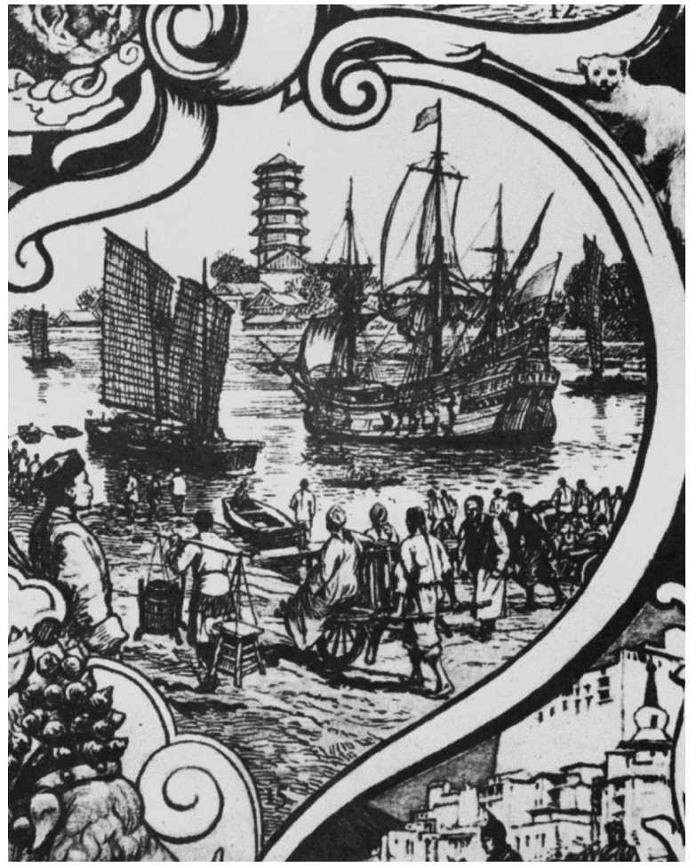
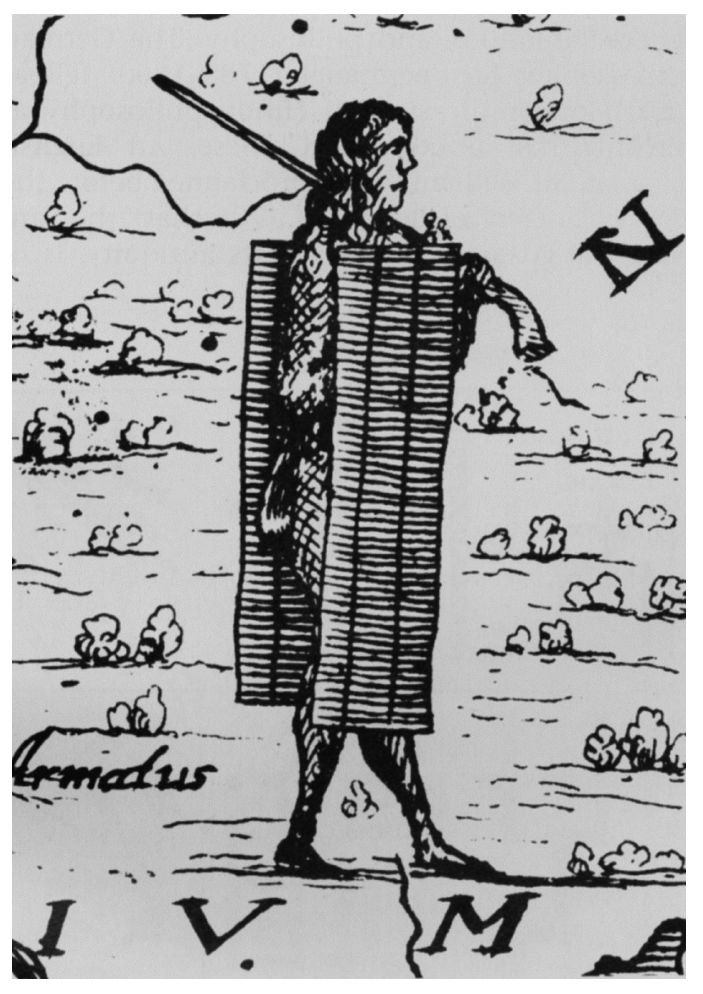
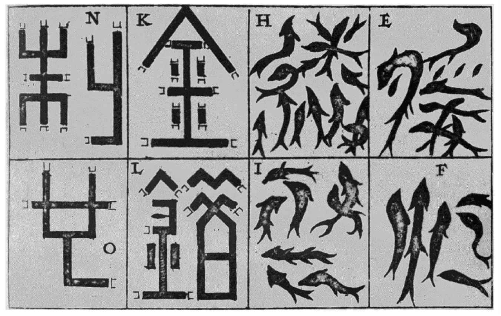

欧洲文化的强加和欧洲政治统治的强加一样，取决于各土著社会的状况。例如，欧洲文化能整个迁移到美洲，是因为诸土著民族或者被消灭了，或者已被撵走。然而，即便是偶然来到拉丁美洲的旅人，也不能不注意到印第安文化残余物的迹象。例如，用土砖砌造房屋，用没有锯过的松树原木作为桁条（即椽子）。同样，披在肩上的毛毯即塞拉普毛毯起源于印第安部落，用两块毛毯缝合在一起、正中开领口制成的庞乔头篷也是如此。拉美大部分地区普遍信奉的罗马天主教，是基督教的教义和惯例与印第安人的信仰和习惯的混合物。虽然印第安人已放弃当地诸神的名字，但他们把这些神的特性分派给圣母玛丽亚和圣徒们，期望天主教万神殿中的这些偶像能像他们的神那样，治愈疾病、控制天气和使他们免受伤害——他们相信，他们的神以往这样做过。在拉丁美洲的菜肴方面，也许可以找到受印第安影响最明显的迹象。玉米粽子、玉米粉圆饼和各种辣菜都是以印第安两大名产蚕豆和玉米为基本原料。
在1763年以前的这一时期中，除了前面已提到的新的、最重要的粮食作物的传播外，欧洲人对非洲和欧亚诸土著文化的影响是微不足道的。在西非，土著酋长们把欧洲商人基本上限制在沿海贸易站。在中东、印度和中国古老的文明中心，诸土著民族如人们可能预料的那样，对欧洲入侵者的文化根本没有印象。穆斯林土耳其人虽与基督教欧洲人关系最密切，但却极看不起他们。甚至在17世纪、18世纪土耳其人本身每况愈下时，他们仍毫不犹豫地表达对基督教异教徒的轻蔑。1666年，土耳其首相对法国大使突然嚷道：“难道我不知道你吗？你是一个邪异教徒［不信安拉的人］，是一头猪、一条狗、一个吃粪的家伙！”[3]
同样，在印度大陆，当已在果阿安身的葡萄牙人于1560年引进宗教法庭时，诸土著民族的反应是非常消极的。从1600年至1773年，因持异教观点而被处火刑的受害者有73人。印度居民不能不注意到天主教的一种不一致性：它监禁、拷打和以火刑处死那些其唯一罪行是持异端观点的人，同时，又阻止寡妇自焚，而自焚按当时印度教的标准则是一种高尚的行为。此外，欧洲冒险家在印度的不法和狂暴行为进一步降低了印度人民对西方基督教徒的评价。1616年，有人对英国牧师特里先生说：“基督教是魔鬼的宗教；基督教徒时常酗酒，基督教徒时常干坏事，基督教徒时常打人，基督教徒时常辱骂别人。”[4]

图173 西方船只到达中国天津。
由于耶稣会传教士的卓越才能和在学问上的造诣，中国人对欧洲人的反应起初较好（如第十九章第三节所提到的）。耶稣会会士成功地赢得了一些皈依者，包括少数学者和一些皇室成员。然而，即使是具备天文学、数学和地理学知识的能干的耶稣会会士，也没有给大多数中国学者留下过深刻的印象，因为他们都不认同西方科学和西方宗教。就当时中国民众对欧洲人的看法而论，它或许准确地反映在以下这句格言中：只有中国人拥有双眼，欧洲人是独眼，世界上所有其他居民都是瞎子。假如是这种态度，那么我们也就可以理解：1763年以前，除诸如天文学之类的专门的知识领域外，欧洲人对中国文明的影响是微不足道的。

图174 印第安人一旦得到了欧洲的武器，诸土著民族内部的冲突就变得伤亡更大。这幅版画（1657年）描绘的是一位休伦武士，他扛着一杆枪，穿着一种用树枝编成的紧身铠甲，它能在受到滑膛枪弹的袭击时提供轻微的保护。
虽然这一时期中，中国人、印度人和土耳其人对欧洲人的文化没有印象，但欧洲人却相反，对他们在君士坦丁堡、德里和北京所看到的东西印象非常深刻。他们首先熟悉奥斯曼帝国，他们的反应是尊敬、钦佩和不安。迟至1634年即帝国开始衰落后，一位富有思想的英国旅行者还下结论说，土耳其人是“近代唯一起伟大作用的民族”，“如果有谁见到过他们最得意的这些时代，他就不可能找到一个比土耳其更好的地方”。[5]17世纪期间，奥斯曼帝国失去了其在欧洲人中间的声誉。与此同时，欧洲知识分子又被遥远的中国文明的许多详细记载所强烈吸引。他们得知中国的历史、艺术、哲学和政治后，完全入迷了。中国由于其儒家的伦理体系、为政府部门选拔人才的科举制度、对学问而不是对军事才能的尊重，以及精美的手工艺品如瓷器、丝绸和漆器等，开始被推崇为模范的文明。例如，伏尔泰（1694—1778年）用一幅孔子的画像装饰其书斋的墙，而德国哲学家莱布尼茨（1646—1716年）则称赞中国的康熙皇帝是“如此伟大、人间几乎不可能有的君主，因为他是个神一般的凡人，点一下头，就能治理一切；不过，他是通过受教育获得美德和智慧……从而赢得统治权”[6]。
18世纪末叶，欧洲人对中国的钦佩开始消逝，一方面是由于天主教传教士正在中国受到迫害，一方面是由于欧洲人开始对中国的自然资源比对中国的文化更感兴趣。这种态度的转变反映在1776年至1814年间在巴黎出版的16卷《中国人的历史、科学和艺术等的研究报告》中。该书第11卷于1786年问世，里面几乎仅收录关于可能会使商人感兴趣的资源——硼砂、褐煤、水银、氨草胶、马、竹以及产毛动物——的报告。
正如欧洲人的兴趣在17世纪从奥斯曼帝国转移到中国一样，到了18世纪后期，欧洲人的兴趣又转移到希腊，并在较小程度上转移到印度。古希腊人成为受过教育的欧洲人极其喜爱的人。1778年，一位德国学者写道：“我们怎么能相信，在欧洲的导师希腊人学会阅读以前，东方诸野蛮民族已产生编年史和诗歌，并拥有完整的宗教和伦理呢？”[7]欧洲有少数知识分子开始热衷于印度文化。印度博学家不愿意把自己神圣的学问传授给外国人。但是，少数欧洲人——多半为耶稣会神父——获得了梵语、文学和哲学方面的知识。德国哲学家叔本华（1788—1860年）就像莱布尼茨被中国哲学迷住那样，着迷于印度哲学。1786年，英国学者威廉·琼斯爵士向孟加拉亚洲学会宣布：“无论梵语多么古旧，它具有奇妙的结构；它比希腊语更完美，比拉丁语的词汇更多，比希腊语和拉丁语中的任何一种优美得多。”[8]

图175 一位基督教传教士试图复制的古代汉字。